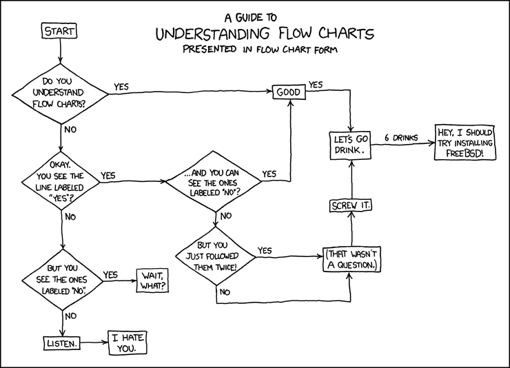
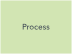
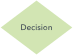
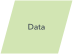
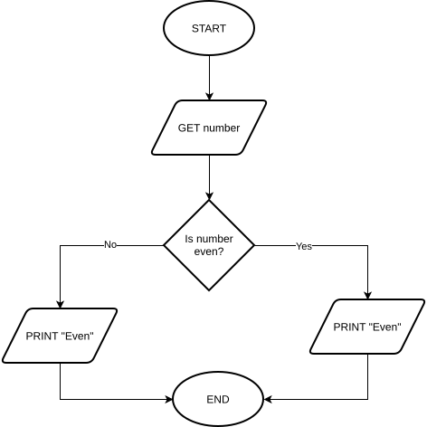
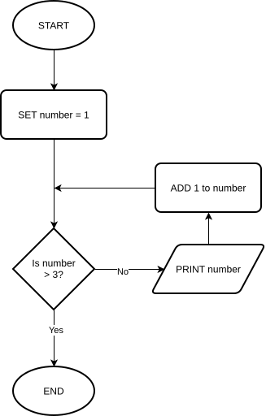
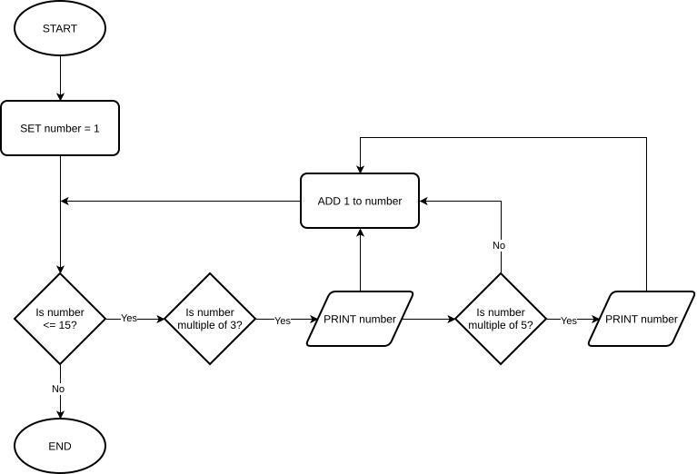
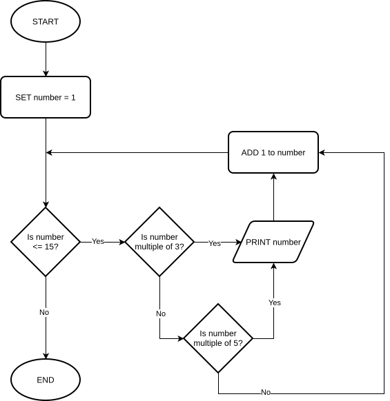

A flowchart is a visual representation of a process.
Flowchart symbols are standardized, the way the text is written is not.



Input Example:
Output Example:
Determine if a number is even or odd and print the result

Print every number from 1-3 inclusive (1, 2, 3)

What is another way that we might have asked "is number > 3" to control entry into the conditional part of the algorithm?
Spot the difference
Only one of these algorithms is correct. How will the incorrect version fail?
Hint: The failure will happen when the number reaches 15. Try walking through them both with 15 as the input.
Print all numbers between 1 and 15 inclusive that are multiples of either three or five
The output should be: 3, 5, 6, 9, 10, 12, 15
v1

v2

Flowchart password validation algorithm
We will do this together using draw.io for the assignment today.
This algorithm is used to check if a password is correct.
To keep things simple, we will assume that the password is hardcoded as "CORRECT".
START
GET password
WHILE password is not "CORRECT":
IF password is blank:
PRINT "Password cannot be blank"
ELSE:
PRINT "Incorrect, try again"
END IF
GET password
END WHILE
PRINT "Welcome!"
ENDNote: The flowchart for this algorithm does not make use of the "process" symbol, but many algorithms will. Be sure to know the difference between input/output and a process.